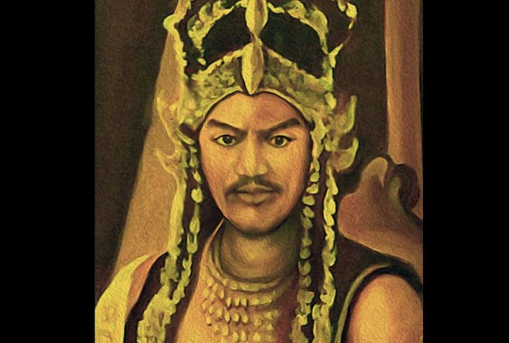

Dalam khazanah cerita rakyat Sunda, terdapat sebuah legenda heroik tentang seorang pemuda bernama
Mundinglaya Dikusumah. Kisah ini bermula dari sebuah kerajaan di Tanah Pasundan yang dipimpin oleh Prabu
Siliwangi.
Raja yang Sakit
Prabu Siliwangi, raja yang bijaksana, tiba-tiba jatuh sakit parah. Tabib kerajaan menyatakan bahwa hanya
bunga melati putih (Jasminum sambac) dari Kahyangan yang dapat menyembuhkannya. Bunga ini sangat langka
dan hanya tumbuh di alam gaib.
"Barangsiapa bisa mendapatkan bunga melati putih dari Kahyangan, akan kuberikan separuh kerajaanku."
Banyak pangeran dan kesatria mencoba pergi mencari bunga tersebut, namun tak satu pun yang kembali.
Hingga akhirnya, Mundinglaya Dikusumah, seorang pemuda dari keluarga biasa, mengajukan diri untuk
menjalankan misi ini.
Perjalanan Berbahaya
Mundinglaya memulai perjalanannya dengan bekal seadanya. Dia harus melewati tujuh bukit, menyebrangi
tujuh sungai, dan menghadapi berbagai makhluk gaib yang menghalangi jalannya. Setiap tahap perjalanan
penuh dengan ujian dan bahaya.
Dalam perjalanannya, Mundinglaya menunjukkan kecerdikan dan keberanian. Dia berhasil melewati berbagai
rintangan dengan bantuan dari makhluk-makhluk baik yang ditemuinya, termasuk seekor burung ajaib yang
memberitahunya jalan menuju Kahyangan.
Di Gerbang Kahyangan
Setibanya di gerbang Kahyangan, Mundinglaya dihadang oleh para penjaga. Dengan ketulusan hatinya, dia
menjelaskan tujuan mulianya untuk menyembuhkan sang raja. Para dewa terkesan dengan keteguhan hatinya
dan mengizinkannya masuk.
Di taman Kahyangan, Mundinglaya menemukan bunga melati putih yang sangat indah. Namun, sebelum
mengambilnya, dia harus melewati ujian terakhir dari Dewi Sri Pohaci, dewi kesuburan Sunda.
Ujian Terakhir
Dewi Sri Pohaci memberikan tiga teka-teki yang harus dipecahkan Mundinglaya. Dengan kecerdasannya, dia
berhasil menjawab semua teka-teki tersebut dengan benar. Dewi pun memberikannya bunga melati putih
dengan syarat tidak boleh melihat ke belakang selama perjalanan pulang.
Fakta Menarik
Bunga melati putih dalam budaya Sunda melambangkan kesucian, ketulusan, dan pengobatan.
Hingga kini, bunga ini masih digunakan dalam berbagai upacara adat Sunda.
Mundinglaya memulai perjalanan pulang dengan membawa bunga ajaib tersebut. Namun, ketika hampir tiba di
kerajaan, dia mendengar suara memanggil namanya. Karena penasaran, dia melanggar larangan dan menoleh ke
belakang. Seketika itu pula, bunga melati putih di tangannya mulai layu.
Pengorbanan Diri
Menyadari kesalahannya, Mundinglaya memutuskan untuk kembali ke Kahyangan. Kali ini, Dewi Sri Pohaci
memberitahunya bahwa satu-satunya cara untuk mendapatkan bunga yang baru adalah dengan mengorbankan
nyawanya sendiri.
Dengan keberanian luar biasa, Mundinglaya bersedia mengorbankan dirinya. Melihat ketulusan ini, para
dewa terharu dan memberinya bunga melati putih yang abadi, sekaligus menghidupkannya kembali dengan
kekuatan baru.

Mundinglaya kembali ke kerajaan dengan membawa bunga melati putih yang menyembuhkan
Nilai Moral Cerita
-
Ketulusan dan pengorbanan akan selalu mendapatkan balasan yang
setimpal
-
Kepatuhan pada aturan adalah hal penting dalam mencapai tujuan
-
Kecerdikan dan keberanian sama pentingnya dalam menghadapi
tantangan
-
Pengabdian kepada pemimpin yang bijak adalah nilai luhur
-
Kesabaran dan ketekunan akan membuahkan hasil
Warisan Budaya Sunda
Legenda Mundinglaya Dikusumah bukan sekadar cerita petualangan biasa, tetapi juga mengandung
nilai-nilai luhur budaya Sunda tentang pengabdian, keberanian, dan kebijaksanaan. Cerita ini sering
diceritakan turun-temurun sebagai bagian dari pendidikan moral.
Hingga kini, kisah Mundinglaya Dikusumah tetap hidup dalam tradisi lisan dan seni pertunjukan Sunda
seperti wayang golek dan pantun Sunda, menjadi warisan budaya yang tak ternilai.